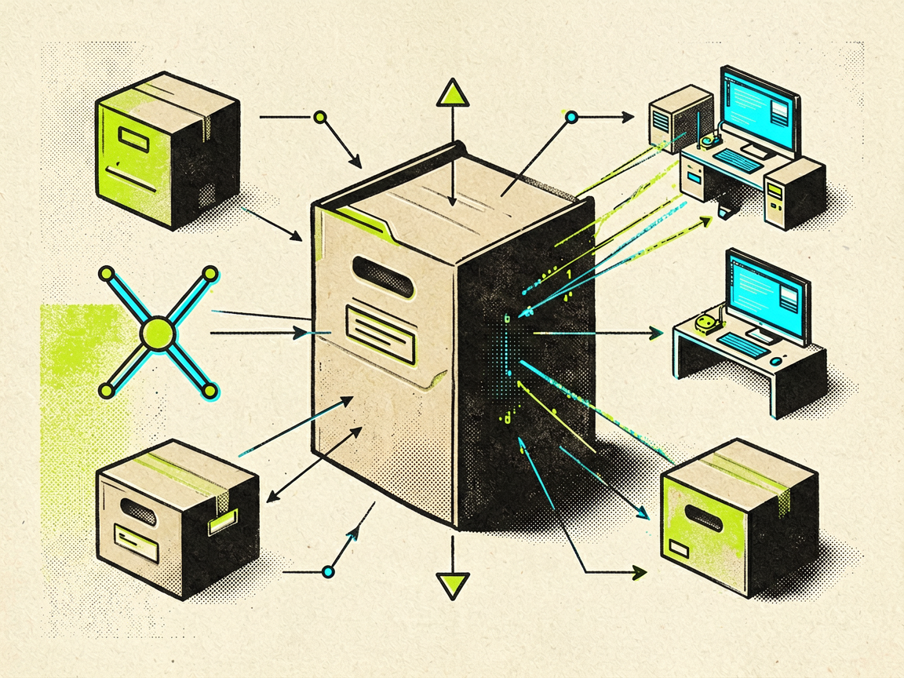

claude-code-plugins-plus-skills
jeremylongshore/claude-code-plugins-plus-skills
Claude Code 的插件、skills 和 agents 数量变多后，团队很难靠收藏链接或复制目录来管理：想找一个 DevOps、MCP 或自动化能力时，不知道去哪搜；装过什么、能不能更新，也容易散在不同项目里。这个项目把 Claude Code 插件、skills 和 agents 做成一个开源市场，并提供 `ccpi` CLI。用户可以按关键词搜索插件，安装某个插件包，查看本机已安装内容，再统一更新。它更像一个面向 Claude Code 能力包的包管理入口，而不是单个 agent 示例。
它适合什么场景
比如一个开发者想给 Claude Code 增加 DevOps 自动化能力，可以先用 `ccpi search devops` 找相关包，再安装 `devops-automation-pack`，之后用 `ccpi list --installed` 检查本机已有插件，用 `ccpi update` 拉取更新。
值得关注的地方
候选证据显示它在 2026-06-25 有正式 Release，且当天仍有 push 活动；这比普通更新时间更强，说明至少有一个可追踪的版本发布事件。Claude Code 生态正在快速长出插件和 skill 目录，这类索引/安装层会变得更实用。
先别忽略的问题
优势是发现、安装和更新路径更集中；代价是能力包质量会受市场治理影响，安装前仍要检查每个插件的权限、脚本行为和维护状态。它今天有正式 Release 证据，但 Release 标签只说明仓库发布了一个包版本，不等于市场内所有插件都经过同等质量验证。
我的判断：适合频繁试用 Claude Code 插件、需要统一管理本地能力包的开发者或小团队；不适合把第三方插件直接用于敏感仓库的人，除非先做来源审查和隔离测试。
查看 GitHub 来源worktrunk
max-sixty/worktrunk
并行使用多个 AI 编码 agent 时，最大麻烦不是让 agent 写代码，而是每个任务需要隔离分支、隔离目录、能看清谁改了什么。手动 `git worktree` 能做到，但命令长、状态分散，任务多了以后容易切错目录或漏清理。Worktrunk 把 Git worktree 的创建、切换、列表查看包装成更直接的 CLI。它围绕“一个任务一个 worktree”的工作方式设计，让开发者可以为新功能创建独立分支和目录，再用列表命令查看各 worktree 状态。
它适合什么场景
比如要让一个 agent 改登录功能，可以执行类似 `wt switch --create feature-auth` 的命令创建 `feature-auth` 分支和对应 worktree。agent 在这个目录里工作，主目录和其他任务目录不会混在一起，结束后再用列表命令检查状态。
值得关注的地方
候选证据显示它在 2026-06-21 有正式 Release，属于 7 天内发布；2026-06-25 还有 push 活动。正式 Release 是较强新鲜度依据，后续 push 只能说明仍在维护，不能单独当成新版本发布。
先别忽略的问题
它降低了 worktree 的日常操作成本，但没有替你解决分支策略、冲突合并和任务拆分问题。团队如果本来 Git 习惯混乱，引入它只能让目录隔离更方便，不能自动保证每个 agent 的改动都容易合并。
我的判断：适合已经在用 Codex、Claude Code 等工具并行处理多个代码任务的人；如果只是偶尔开一个分支，原生命令或 IDE Git 面板可能已经够用。
查看 GitHub 来源ai-research-skills
WenyuChiou/ai-research-skills
研究工作里，AI 容易把“找资料、想选题、写初稿”都做成即时聊天，结果缺少关卡：题目是否已经过时、贡献是否站得住、方法是否可执行，经常到后期才暴露问题。这个仓库把研究流程拆成一组通用 `SKILL.md`：文献综述、研究设计、项目记忆、论文写作和跨 agent 分工等。候选文本强调先用三道关卡筛选 thesis topic，再进入文献、设计、实验、写作和投稿流程。
公开信息依据
核验证据：证据 1
它适合什么场景
比如准备一个论文选题时，可以先让 skill 生成候选主题的决策档案，检查研究空白是否真实、贡献是否明确、资源是否够做；只有通过这些检查，才继续进入文献整理和研究设计。
值得关注的地方
候选证据显示它在 2026-06-23 有普通 push，属于 7 天内活跃，但没有正式 Release 证据。因此今天的价值主要来自近期维护和研究型 skill 目录的完整度，而不是一个可验证的新版本发布。
先别忽略的问题
它的价值在流程约束，不在替代领域专家判断。研究者仍要自己核验文献、方法和数据可得性；如果把 skill 输出当成最终学术判断，反而可能把错误假设包装得更像流程化结论。
我的判断：适合研究生、独立研究者或需要把 AI 纳入研究流程的团队；不适合希望一键生成论文的人，它更像研究流程脚手架，而不是学术质量担保器。
查看 GitHub 来源agentic-ai-engineering
agenticloops-ai/agentic-ai-engineering
很多 agent 教程直接给框架或模板，学习者能跑起来，却不一定理解 agent loop、工具调用和 prompt 设计之间怎么配合。结果一换模型或任务，就不知道该改循环、工具还是提示词。这个仓库定位为从零构建 AI agent 的实战教程，覆盖 LLM API、prompt engineering、tool calling 和 agent loop。它的重点是把 agent 的核心循环拆开讲，让学习者理解每一步为什么存在。
公开信息依据
核验证据：证据 1
它适合什么场景
比如学习工具调用时，可以先从一个简单 LLM API 调用开始，再加入工具描述、模型选择工具、执行工具、把结果回填给模型这一轮循环。这样比直接套用大型框架更容易看清错误出在哪一层。
值得关注的地方
候选证据显示它在 2026-06-25 有普通 push，属于近 24 小时活跃，但没有正式 Release。今天把它列入，依据是近期维护和 agent 基础教程需求，而不是某个可验证的新版本发布。
先别忽略的问题
教程型项目适合建立概念和动手练习，但不等于生产框架。它可能缺少企业项目需要的权限、审计、队列、观测和错误恢复能力；学习后仍要把这些工程层补上。
我的判断：适合想理解 agent 底层机制的开发者、课程作者和准备从框架使用转向自定义 agent 的团队；如果目标是快速上线稳定系统，应把它当学习材料，再另选成熟运行框架。
查看 GitHub 来源
craftdesk
mensfeld/craftdesk
Claude Code skills、agents、commands、hooks 和插件越来越多后，本地能力目录会变成手工复制的杂物箱：版本不好追踪，依赖关系不清楚，也难判断哪些能力来自哪里。Craftdesk 把这些 AI 相关资源作为可安装、可管理、可版本控制的依赖来处理。候选证据把它描述为面向 Claude Code skills 和 agents 的包管理器，提供安装、管理和版本控制这条主线。
公开信息依据
核验证据：证据 1
它适合什么场景
比如团队有一套内部 Claude Code skills，同时还想试用外部 agents，可以用 Craftdesk 这类工具把资源作为依赖管理，而不是让每个人手动复制目录。这样更容易复现某个工作环境，也更容易回滚。
值得关注的地方
候选证据显示它在 2026-06-25 有普通 push，属于近 24 小时活跃；没有 Release 证据。它今天值得看，是因为 AI 编码工具正在从单个提示词转向可复用能力包，本地依赖管理会越来越常见。
先别忽略的问题
包管理思路能提升可复现性，但也会带来供应链审查问题：skills 和 hooks 可能影响代码生成、命令执行或上下文读取。候选只显示普通 push，没有正式 Release，因此不应把当天更新解读成稳定版本发布。
我的判断：适合正在沉淀 Claude Code 能力库、希望统一安装和版本管理的个人或团队；如果只是临时试几个 skill，直接手工放置可能更简单。
查看 GitHub 来源